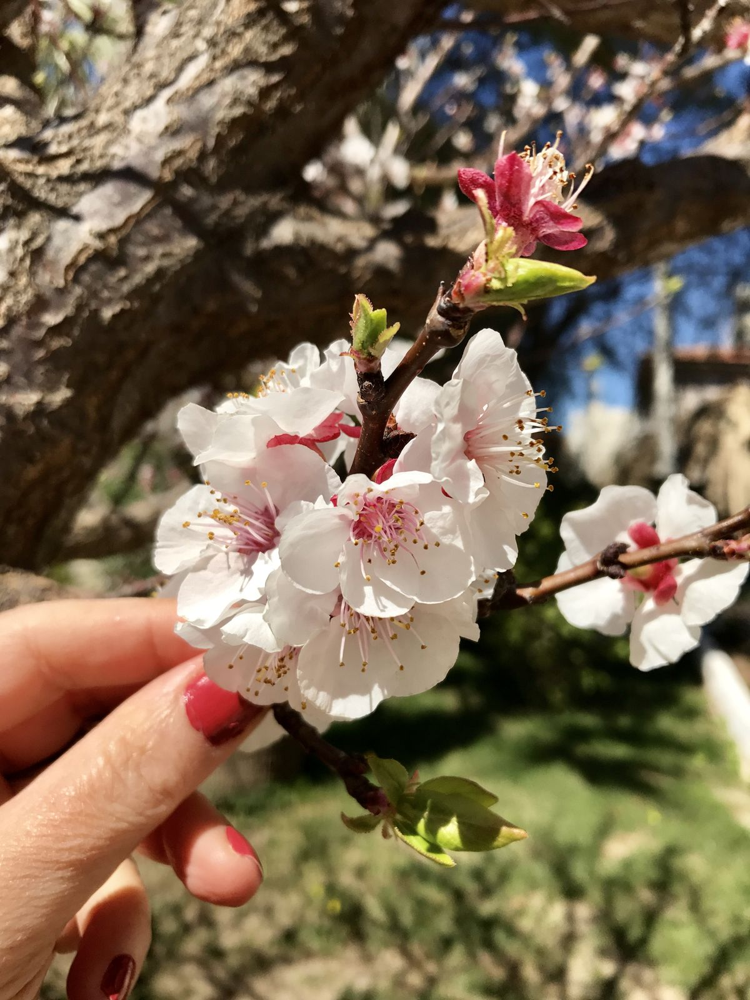
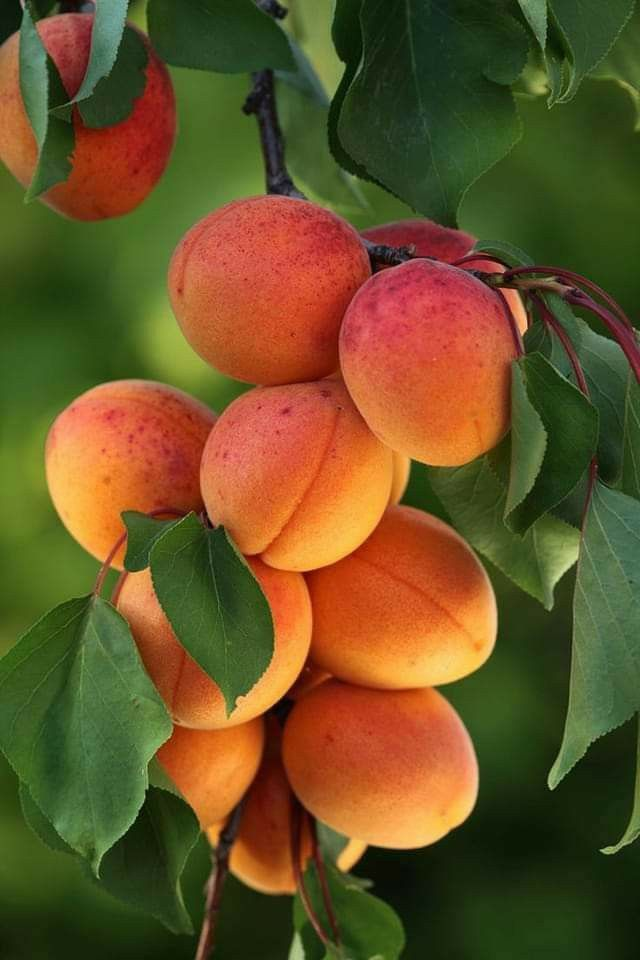

Malatya Kayısısı Hakkında Bilgiler


Malatya kayısısı, dünyanın en kaliteli kayısılarından biri olarak kabul edilir...
Kayısının Özellikleri
- Tadı çok tatlıdır.
- Güneşte kurutulabilir.
- Vücut için çok sağlıklıdır.
- Malatya'nın en önemli geçim kaynağıdır.
- Yüksek vitamin ve mineral içeriği vardır.
- Diyetisyenler tarafından önerilir.
- Antioksidan özellikleri vardır.
Ana Sayfaya Geri Dön